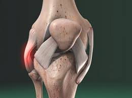
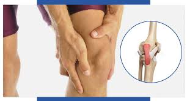
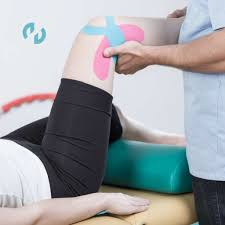

Ligamento Lateral
Los ligamentos laterales de la rodilla (interno y externo) son bandas de tejido que conectan el fémur con la tibia y el peroné. Su función es estabilizar la articulación y evitar que la rodilla se mueva excesivamente de lado a lado. Existen dos principales:

LLI y LLE y sus lesiones
- ligamento lateral interno (LLI): que evita que la rodilla se doble hacia adentro. Ubicado en la cara interna de la rodilla. Es plano, ancho y más fácil de lesionar (frecuente en deportes por impactos o giros).
- ligamento lateral externo (LLE): Ubicado en la cara externa de la rodilla. Es más cilíndrico (forma de cordón) y su lesión suele ser menos común, pero generalmente ocurre por movimientos muy violentos.

sintomas
Si sufres un estiramiento excesivo o desgarro, podrías experimentar:
- Dolor e inflamación en el lado afectado de la rodilla.
- Sensación de inestabilidad o fallo al cargar peso.
- Posibles hematomas o rigidez articular.
- Un sonido de "chasquido" al momento de la lesión.

Tratamiento
El manejo del ligamento lateral depende de la gravedad de la lesión. En muchos casos, el tratamiento no quirúrgico es suficiente para recuperar la función.
- Reposo y hielo: reduce inflamación y dolor.
- Fisioterapia: fortalece los músculos y mejora la estabilidad.
- Férula o venda compresiva: protege la rodilla mientras sana.
- Cirugía: en lesiones completas o inestabilidad persistente, puede requerirse reconstrucción del ligamento.